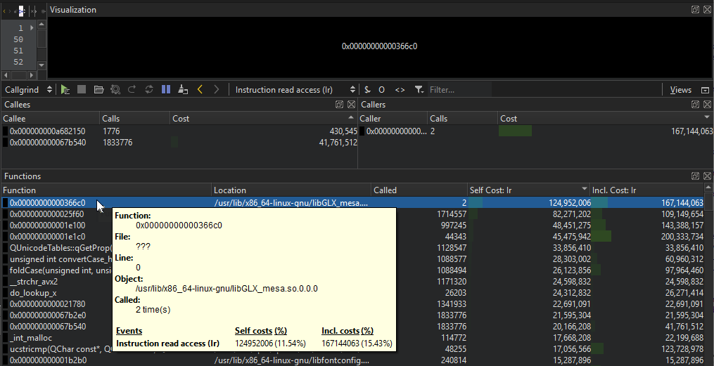
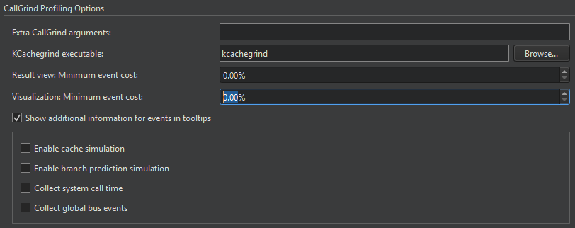

Profiling Function Execution
You can use the Callgrind tool included in the Valgrind tool suite to detect problems that are related to executing functions. In addition, you can load the data files generated by Callgrind into the KCachegrind profile data visualization tool for browsing the performance results.
After you download and install Valgrind tools and KCachegrind, you can use Callgrind and KCachegrind from Qt Creator.
Note: You can install and run Callgrind and KCachegrind locally on Linux. You can run Callgrind on a remote Linux machine or device from any development machine.
To analyze applications:
- In the Projects mode, select a release build configuration.
- Select Debug to open the Debug mode, and then select Callgrind on the toolbar.
- Select the
 button to start the application.
button to start the application. - Use the application to analyze it.
- Select the
 button to view the results of the analysis in the Profile view.
button to view the results of the analysis in the Profile view.
Callgrind records the call history of functions that are executed when the application is run. It collects the number of instructions that are executed, their relationship to source lines, the relationships of the caller and callee between functions, and the numbers of such calls. You can also use cache simulation or branch prediction to gather information about the runtime behavior of an application.
Double-click a function to view information about the calling functions in the Callers view and about the called functions in the Callees view.
Since the run-time characteristics of debug and release build configurations differ significantly, analytical findings for one build configuration may not be relevant for the other. Profiling a debug build often finds a major part of the time being spent in low-level code, such as container implementations, while the same code does not show up in the profile of a release build of the same application due to inlining and other optimizations typically done there.
Many recent compilers allow you to build an optimized application with debug information present at the same time. For example, typical options for GCC are: -g -O2. It is advisable to use such a setup for Callgrind profiling.

To view the data in KCachegrind, select the (Open Results in KCachegrind) button on the toolbar. Qt Creator launches KCachegrind and loads the data into it for visualization.
Selecting Profiling Options
You can specify analyzer settings either globally for all projects or separately for each project in the run settings of the project.
To specify settings for Valgrind, select Tools > Options > Analyzer. The Profiling Options group contains Callgrind options.

In the KCachegrind executable field, enter the path to the KCachegrind executable to launch.
In the Result view: Minimum event cost field, limit the amount of results the profiler gives you to increase profiler performance.
You can collect information about the system call times and the number of global bus events of the event type Ge that are executed.
Enabling Full Cache Simulation
By default, only instruction read accesses (Ir) are counted. To fully simulate the cache, select the Enable cache simulation check box. This enables the following additional event counters:
- Cache misses on instruction reads (I1mr/I2mr)
- Data read accesses (Dr) and related cache misses (D1mr/D2mr)
- Data write accesses (Dw) and related cache misses (D1mw/D2mw)
Enabling Branch Prediction Simulation
To enable the following additional event counters, select the Enable branch prediction simulation check box:
- Number of conditional branches executed and related predictor misses (Bc/Bcm)
- Executed indirect jumps and related misses of the jump address predictor (Bi/Bim)